Photo credits
Where the pictures come from.
Every picture on this site was generated for this demo. None of them shows Sashmoor's work, because Sashmoor does not exist, and none of them is a photograph of a real window, a real job or a real person.
| What it shows | Where it came from | Used for | |
|---|---|---|---|
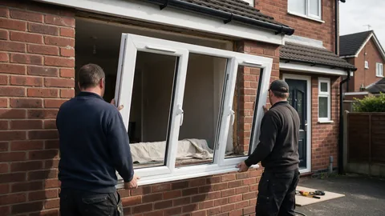 | Two fitters lifting a new window into a cleared opening, used on the home page and the work page | Generated for this demo | Illustrative only |
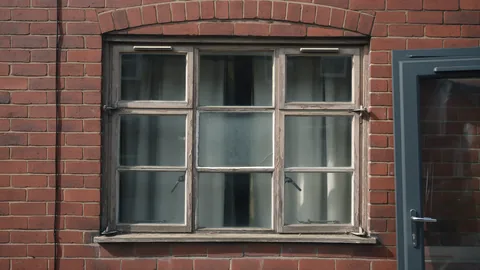 | The 'before' half of the slider: a tired timber window with flaking paint and one cloudy pane | Generated for this demo | Illustrative only |
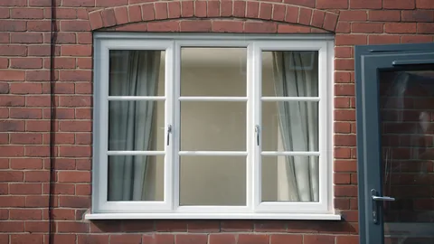 | The 'after' half of the slider, generated from the 'before' picture so it is the same opening | Generated for this demo | Illustrative only |
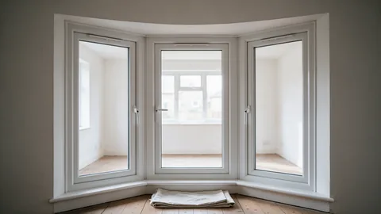 | A bay of new windows seen from inside an empty front room, used on the windows page | Generated for this demo | Illustrative only |
 | A new composite front door in a brick porch, used on the doors page | Generated for this demo | Illustrative only |
 | Bifold doors folded open onto a patio, used on the bifolds and patios page | Generated for this demo | Illustrative only |
 | A sliding patio door seen from the garden, used on the patio article | Generated for this demo | Illustrative only |
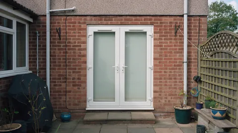 | A pair of french doors onto a patio, used on the work page | Generated for this demo | Illustrative only |
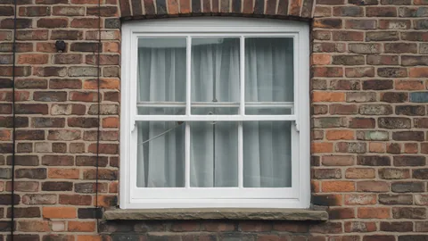 | A timber sash window with the bottom sash raised, used on the sash windows page | Generated for this demo | Illustrative only |
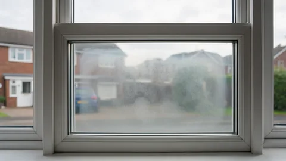 | A failed sealed unit with cloudy bloom between the panes, used on the misted glass page and article | Generated for this demo | Illustrative only |
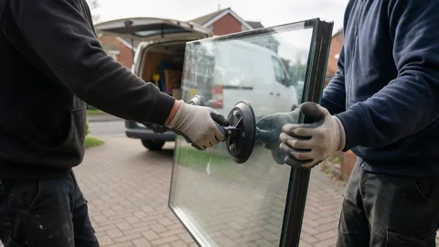 | A new sealed glass unit being carried on suction lifters, used on the misted glass page | Generated for this demo | Illustrative only |
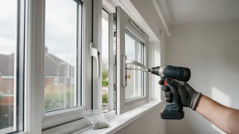 | A new window handle being fitted with a cordless screwdriver, used on the repairs page | Generated for this demo | Illustrative only |
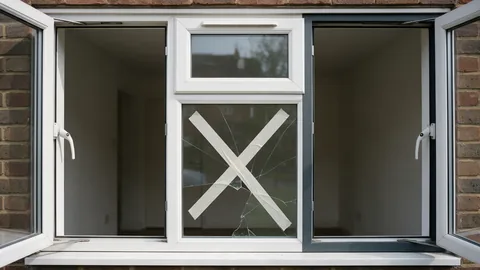 | A cracked pane taped across to hold it, used on the urgent help page | Generated for this demo | Illustrative only |
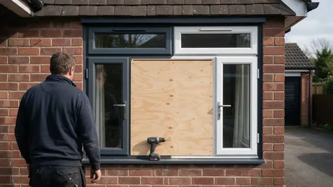 | Plywood screwed over a ground floor window opening, used on the urgent help page | Generated for this demo | Illustrative only |
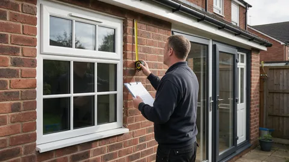 | A fitter measuring an opening with a tape and a clipboard, used on the windows page | Generated for this demo | Illustrative only |
 | A front room on fitting day with the old frame out, used on the fitting day article | Generated for this demo | Illustrative only |
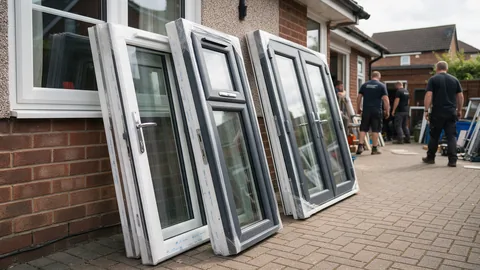 | New frames stacked and wrapped on a drive, used on the work page | Generated for this demo | Illustrative only |
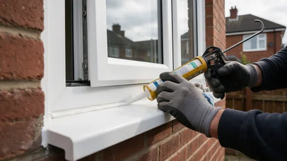 | Silicone being run along the edge of a new frame, used on the repairs page | Generated for this demo | Illustrative only |
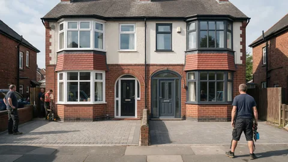 | A street of nineteen thirties semis with bay windows, used on the areas pages | Generated for this demo | Illustrative only |
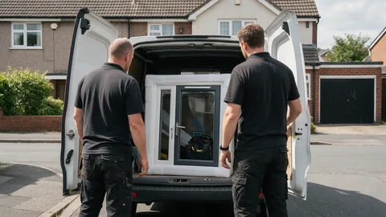 | Two fitters at a van tailgate with a frame in it, used on the about page | Generated for this demo | Illustrative only |
The rest of it
Everything else on the page is drawn in the browser: the brand mark, the icons, the sightline rule under each heading and the diagram of what is inside a sealed glass unit. No stock photography, no clip art and no third party images.
Nobody in any picture is identifiable, and no van, sign, packaging, frame or workwear carries a real name or logo. Every file is a WebP under 200 KB.
The before and after
The pair on the home page is the same opening twice. The 'after' picture was generated from the 'before' one, so the brick, the arch over the window and the cill all match. It is there to show what a replacement should look like, which is a house that still looks like itself.
The words
All the copy on this site was written for this demo. The firm, the people, the jobs and the reviews are invented. Anything factual, like how a sealed unit fails or why a uPVC door starts needing a lift, is general trade knowledge rather than advice on your property. There are no prices, no guarantees, no schemes and no response times anywhere on it, on purpose.
The numbers
The firm's number, 01632 960606, comes from the range Ofcom keeps for television and film, so it rings nobody. The email address ends in .example, which cannot receive anything. The only real number anywhere on this site is Clockwork's own, 07460 038202, in the bar at the top and the note at the bottom, and it is labelled as Clockwork's rather than the firm's.
Want one like this for a real firm?
Ring Clockwork on the number in the bar at the top of the page. This demo is here to show what gets built, not to sell you a window.